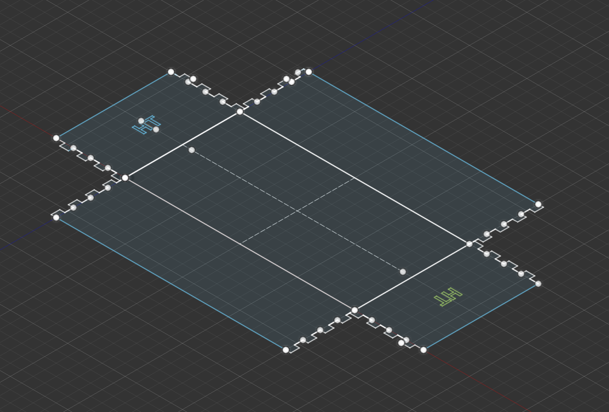
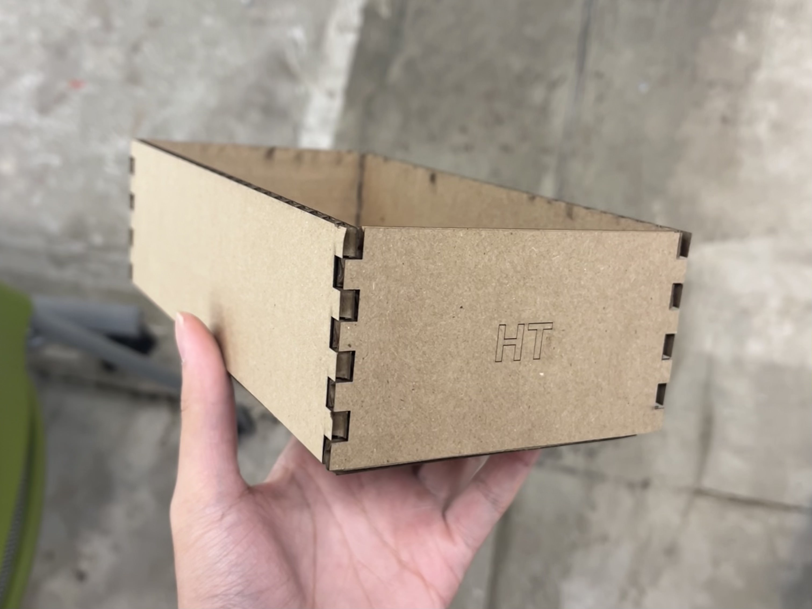
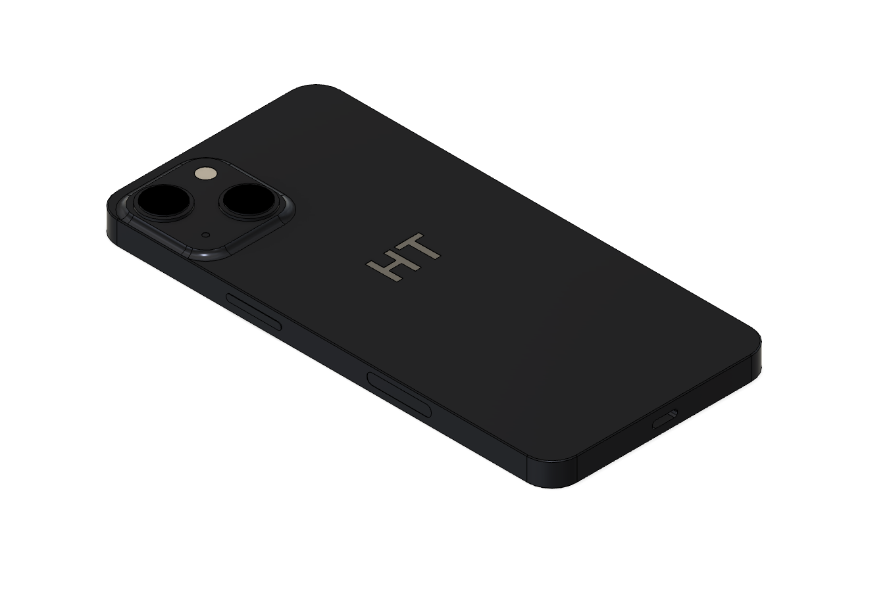

Week 2
2D/3D CAD Design
This week, we were introduced to the lasercutter and learned the basics of Autodesk Fusion 360. I designed a parametric sketch of a cardboard box on Fusion 360, followed an online tutorial of the software, and modeled a drinking glass and my Iphone.
Parametric CAD Sketch Box


I followed the parametric sketch tutorial for the box and made personalized edits to the parameters such as the number of finger, sizing, and pattern for my own design. Afterwards, I added my intials which was scored on the two ends of the box. I wanted to keep the design simple because I wanted to be functional and an easy space to throw materials or resources in as it is intended for. One thing I would revise is to make the height and width a bit larger and engrave my initials instead of scoring for it to be more visible.
Iphone


I attened office hours and familerized myself with the calipers to measure the dimensions of my Iphone. Using the exact dimensions, I recreated my Iphone in Fusion 360.
Download Iphone.
Drinking Glass


For this design, I kepted the design minimalistic and also engraved my initials at the bottom of the glass. I used the offset tool during the sketch and the revolve function to turn the sketch three dimensional. Then I used the apperence feature to change the material
Download Drinking Glass.
Fusion 360 Tutorial


I followed the linked tutorial series on Youtube for Fusion 360. In this design, I used the shell function and the offset sketch tool.
Download Lego Brick.